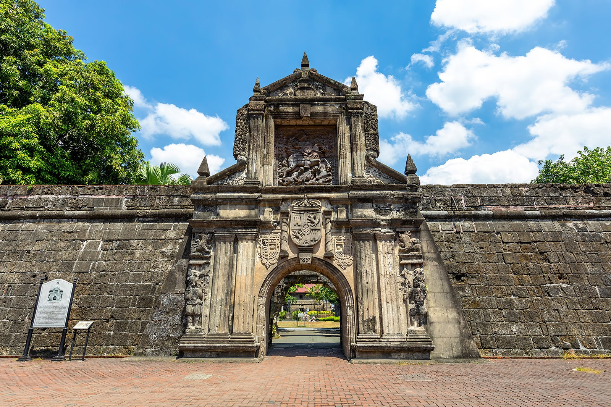

BORACAY
Boracay is a tropical haven for beach lovers, known
for its pristine white sand beaches and energetic nightlife. At opulent resorts, you
can unwind and participate in water activities.

PALAWAN ISLAND
Due to its unspoiled natural beauty, Palawan is frequently
referred to as the "Last Frontier". Explore the Underground River, go snorkeling in El
Nido's pristine waters, and learn about the local flora and animals.
BANAUE RICE TERRACES
These rice terraces, which are frequently referred to as the
"Eighth Wonder of the World," were carved into the mountains more than 2,000 years
ago by the native Ifugao people.
MAYON VOLCANO
The Mayon Volcano, famous for its nearly symmetrical cone shape,
is a sight to behold and provides hiking options for adventure seekers.

INTRAMUROS
Intramuros, a historic walled city in Manila with Spanish colonial
buildings, churches, and museums, provides an insight into the country's colonial past.

CHOCOLATE HILLS
During the dry season, these 1,200 precisely cone-shaped
hills in Bohol turn chocolate brown, resulting in a mesmerizing and strange landscape.
VIGAN
On the west coast of the island of Luzon, the Philippines
has a city called Vigan. It is renowned for its well-preserved Asian and
Spanish colonial architecture.

KAWASAN FALLS
The Kawasan Falls are a three-stage cascade of crystal-clear
blue water that originates from mountain springs in the Cebu island jungle. In Badian,
Cebu, the Philippines, the Kawasan River includes the falls.
DAVAO CITY
Davao City, which is in Mindanao, has both urban and
natural attractions. Enjoy the neighborhood fruit markets while exploring
the Philippine Eagle Center.
PAMPANGA
Pampanga is known as the culinary capital of the Philippines
because it serves some of the best Filipino cuisine, but this province in Central
Luzon offers more than simply delicious food.